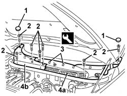

7055A18 Windscreen base TRIM - R.R.
- Path
- Procedures > 70 FITTINGS > 7055 MOULDING AND PROTECTION > 7055A exterior mouldings > 7055A18 Windscreen base TRIM - R.R.
- Kind
- repair procedure (removal / refitting; the operation number is the code)
- Applies to
- all engines; all production periods
- Interactive page
- https://sloeber94.github.io/elrnDB-a147/en/#/3025895
Applies to: all engines; all production periods
 Removing
Removing
 Refitting
Refitting5050B34 windscreen wiper arm/s complete with blade - r+r (left and right sides)
1. Remove the covers.
2. Unscrew the bolts
3. Release the inner retainers using the special tool.
 | Name | Country |
|---|---|---|
3 | Scraper blade | 1.823.015.000 |
4. Remove left trim (4a) followed by right trim (4b).

Applies to: all engines; all production periods
Refitting
RemovingCheck that the trim is undamaged.
Fit right trim, then left trim and do up the inner retainers.
Tighten the bolts and fit the covers.
5050B34 windscreen wiper arm/s complete with blade - r+r (left and right sides)
Topics linked from this page (1)
Topics that link to this page (6)
- 5050B38 windscreen wiper assembly - r+r or repair
- 5505C28 intergrated engine bay and abs system wiring - r r
- 5505C41 cabin wiring - r r
- 7030B38 sliding roof drainage pipes (water drain) - check
- 7035A14 (Bonded type) windscreen GLASS - R.R. - Includes. cleaning edges of glass and housing in bodyshell
- 7035A18 windscreen glass r r including cleaning of housing